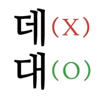

일본 인기 아티스트 바운디 내한공연 떼창이 기깔나게 뽑혀서 공식 채널에 박제됨
내한공연 떼창 레전드 갱신
댓글
평생의 자랑 바운디 스탠딩 참석
뭔데 애네들? 인기 장난아닌거 같은데
누가그러더라 일본노래 안들으면 알필요없데 참고로 나도 모름

인기장난아닌거같은데 내가생각한거라 o
일본노래 안들으면 알필요없데 x -> 남이말한거라 대 써야함
p.s 인기 장난아니라고 하던대 o
하던데는 내가 말한거라 가 아니고 원래 그렇게 쓰는 맞춤법임
-던데 로 쓰이는 어미
내 경험을 전달 할때 쓰이는 데 는 보통 ~데로 쓰임
ex) 아까 집앞에 공사하데, 어제 먹은 성심당빵 맛있데
인기 장난아니라고 하던데 이게맞아 ??
인기 장난아니라고 (유튜브댓글에서) 하던대 이거아냐 ?
ㅇㅇ
맞지
하던데는 원래 그렇게 쓰이는 단어니까
누가 했는지는 중요하지 않은 원래 그대로 쓰이는 단어임
그런데 같은거야 그런대로 안쓰이잖아
밑은 제미나이가 설명해준거
어간 '하-' 뒤에 연결·종결 어미인 '-던데'가 결합한 형태입니다. 이때의 '데'는 독립된 단어가 아니라 어미의 일부분입니다.
자신이 과거에 직접 보거나 겪은 사실을 회상하여 전달하거나, 뒤이어 할 말의 배경을 깔아줄 때 씁니다.
예: "철수 아까 열심히 공부하던데?", "밖에 비 오던데 우산 챙겨 가."
어려우 ㅓㅠㅠㅠ
열손가락 안에 드는 가수긴함
잘한다잘한다 하니까 진짜 잘해버려서 무대를 안방처럼 쓰는 애임
이찬혁+자이언티 쯤 느낌임
정보 : 저 영상에 내가 나온다
너 바운디야?
댓글로 싸인해줘
싸인
번창하세요^^♡
-바운디
가수는 뽕 오지게 차긴 했을듯 ㅋㅋ
원래 저런거 하고싶어서 만든 노래인데 일본라이브 영상 보면 조~~~~용함 ㄹㅇㅋㅋ
하 배아프다 저걸 못갔네…
바운디가 방방 뛰는거 첨봤다는 일본인 댓글 개웃기더라 ㅋㅋㅋ
어떤 개붕이가 븅신같은 사족 달았던글 아닌가
정작 본인은 어쩌구 저쩌구?
개인방송에서 부정적인 내용 아닌데 별로였다고 개인해석 하던사람 있었음
일본 트위터나 커뮤 해석본 보니까 떼창 좋았는데 왜 저런 반응이냐 교토출신이냐 이런 의견 많은거보니 좋게 쳐줘도 긍정적 의미는 아닌듯
영상 보고왔는데 보통 인플루언서나 연예인들은 안 좋아도 좋았다고 좀 포장해서 말하지 않나?
솔직히 영상만 보면 한국에서의 공연이 즐거웠다고 보긴 힘든데 아무리 좋게 해석한다고 해도;
저 영상이 끝인데 일본이고 한국이고를 떠나서 스탠스를 긍정적으로 해석하는게 신기하지 않나? 토요일 콘서트 비매너 관객이 많아서라고 추정중이더라
아니라고 좆븅신아 쫌 속 터지겠네 진짜 그게 맞는 해석이라고
댓글 1페이지일때 댓글이랑 유게 내려가는거보고 그런가보다한거렸어 미안
사족이 아님 그얘기하는사람 많고 이미 불탓음
무한돌림 돈룩백인앵거 맛 좀 볼래? 영화에도 박제됐다구~
ㅋㅋㅋㅋ 시계보면서 가야된다고 하는거 박제해줘서 좋았다
주말 일본 양일 투어에 한국 평일 하루 여서 약간 억지로 끼워서 온건가,, 싶었는데 영화에서 많이 올려줘서 좋았음
이정도면 투어영상 유실은 한국이 아니라 일본이었던것
가수가 뽕찰만했네ㅋㅋ 일본에선 저 가수 방방뛰는거 첨본다고 했다던데
다음에도 와다오
이건 너무 국뽕이다 ㅋㅋㅋ 떼창이 별로였다는건 아니고 바운디 채널 들어가서 영상들 보면 딱 보이는데 사실상 투어마다 영상 하나씩 올리는거임
근디 대놓고 합창곡으로 만든 요비고에 라이브랑 비교해보면 뽕찰만함ㅋㅋ
존나 아쉬운건 전게 많아서 다른 레전드 공연이 올라올까 싶음
씨발 어제는 안불렀건데..! 이지랄하면서 과몰입하고 흥분하는 병신들만아니면 나쁘지않았음
애니음악이야?
내한공연은 이게 일상이라구? 자주 와라
소라미미 때는 ㄹㅇ 신나 보였음 ㅋㅋ
첨들어보는데 괜찮네
뽕차는 맛이 있음.
누구여
수염멋있네 근데 첨봄
바운디라길래 바람의나라운빨디펜스인줄알앗어
가수로선 저렇게 많은 사람들이 내 노래를 함께 불러주는걸 직접 본다는 게 엄청 감동적일 것 같음
이거 풀버전 보고싶었는데 캬